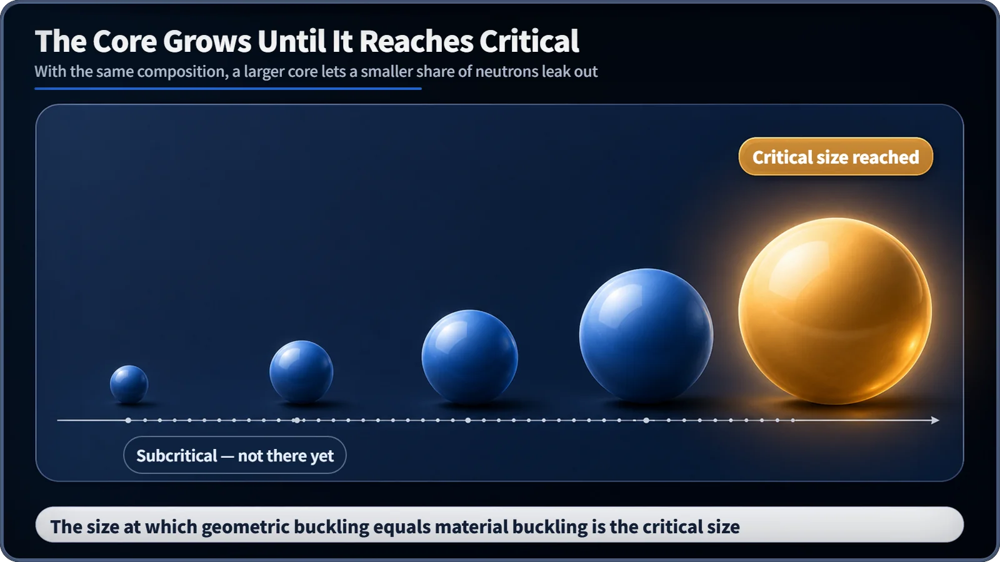

Neutron Physics & the Core · 093
Start With the Smallest Size That Fits — How a Reactor's Critical Size Is Decided
The recipe fixes the material buckling; the critical size is the smallest core whose geometric buckling matches it.
Once the fuel and moderator recipe fixes the material buckling, there is exactly one smallest core size at which the geometric buckling equals it. That minimum dimension is the critical size. For a sphere, the extrapolated radius is simply π divided by the square root of the material buckling. [1]
The fabric is chosen; now find the size
Pick a fabric and design in a clothing store and one question is left: the smallest size you can wear. A reactor asks the same thing. Once the enrichment, the moderator and their mix are fixed, what remains is how big the core must be to reach criticality, the state in which the chain reaction holds steady.
Geometric buckling is set purely by the core's shape and size; material buckling is set purely by its composition; and criticality requires the two to be equal. Material buckling is the fabric you can't change, geometric buckling is the size you can adjust, and the critical size is the smallest size that fits.
Turning the condition into a number
Each shape has its own formula for geometric buckling, written in terms of extrapolated dimensions: the flux does not drop to zero exactly at the core's edge but at an imaginary boundary slightly outside it. [1]
| Core shape | Geometric buckling Bg² |
|---|---|
| Slab (extrapolated thickness ã) | (π / ã)² |
| Sphere (extrapolated radius R̃) | (π / R̃)² |
| Finite cylinder (R̃, H̃) | (2.405 / R̃)² + (π / H̃)² |
Set the sphere's formula equal to the material buckling and only the radius is unknown: R̃ = π / Bm, where Bm is the square root of the material buckling. Subtract the small extrapolation distance and you have the physical radius.
As an illustration only (not a design value for any real reactor): if Bm ≈ 0.05 cm⁻¹, then R̃ = π / 0.05 ≈ 63 cm. A larger material buckling, from a mix that multiplies neutrons better, gives a smaller critical radius, which is why more highly enriched fuel can go critical at a smaller size. [2]

Shape changes the volume needed
Neutrons can only escape through the core's surface. For the same volume, a shape with less surface leaks less and goes critical with less material. On pure geometry the sphere has the smallest surface for its volume, so it needs the least volume; a flat slab needs far more. That makes the sphere theoretically efficient, but real power-reactor cores are close to cylinders for engineering reasons such as refueling, coolant flow and control-rod movement.
Common mix-ups
Critical size is not critical mass. Critical size is a length; critical mass is that size multiplied by density. The same critical size can correspond to a different critical mass if the density changes.
Critical does not mean dangerous. Criticality is the normal state of a reactor running at steady power. What matters for safety is how stably that state is managed with control rods and cooling systems.
Reactors are not built at the minimum size. As fuel burns up, the material-buckling-like value slowly falls, so power reactors are built larger than the theoretical minimum. The excess reactivity is held down with control rods or burnable absorber rods and released gradually as the fuel is used.
Beyond the reactor: criticality safety
The same idea protects fuel outside the core. When nuclear fuel is stored or transported, its shape and spacing are calculated in advance so that it can never accidentally reach a critical size or mass. This field is called criticality safety; specific regulatory criteria differ by country and agency and are not covered here.
Key takeaways
The critical size is the minimum dimension at which geometric buckling equals the fixed material buckling. For a sphere, R̃ = π / Bm. Shape matters through the surface-to-volume ratio, critical size differs from critical mass, and real reactors are built larger than the minimum, with control rods managing the excess.